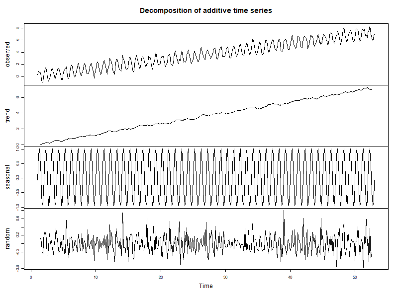
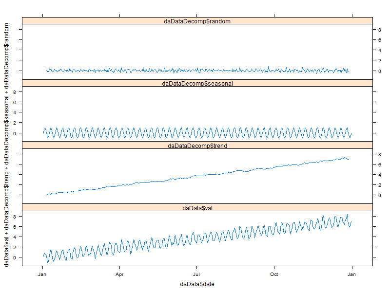
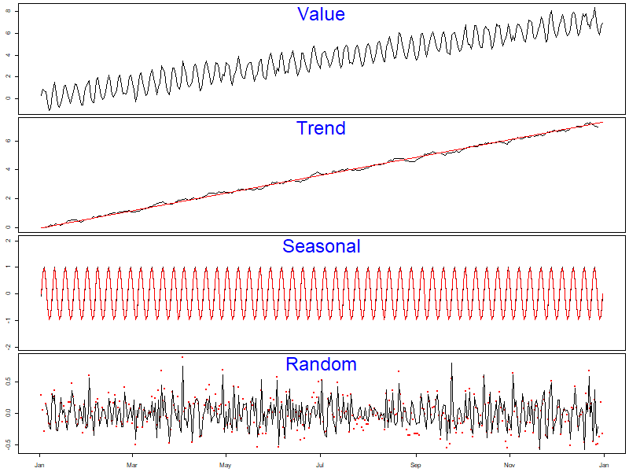
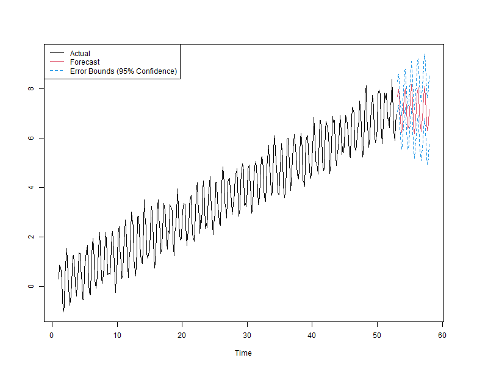
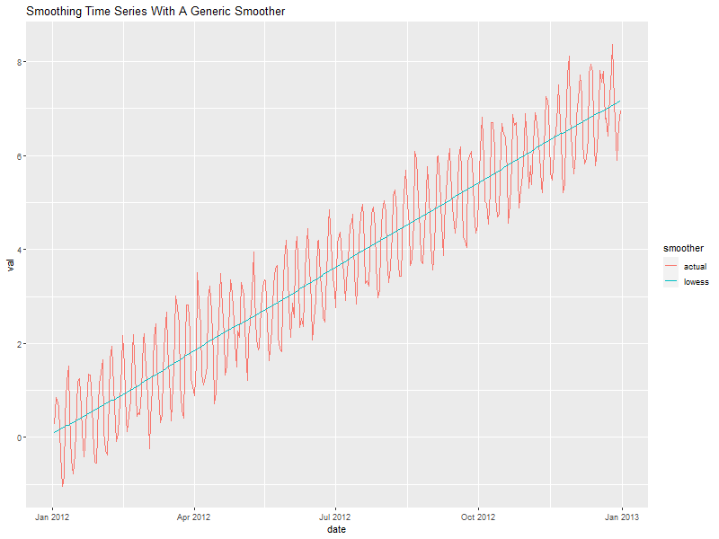

Time Series Examples
| Author: | Mitch Richling |
| Updated: | 2021-05-04 |
Copyright 2020 Mitch Richling. All rights reserved.
Table of Contents
1 Source Code and Files
2 First Steps
2.1 First we create some data
daData <- data.frame(date=as.POSIXct('2012-01-01')+(1:365)*(60*60*24)) daData$idate <- as.numeric(daData$date) daData$x <- (daData$idate-min(daData$idate))/(60*60*24) daData$trend <- daData$x/50 daData$seasonal <- sin(pi*daData$x/3.5) ######## TRY THIS: equal positive and negative components #daData$seasonal <- abs(1+sin(pi*daData$x/3.5)) ######## TRY THIS: positive seasonal component daData$random <- rnorm(daData$x, sd=.25) daData$val <- daData$trend+daData$seasonal+daData$random
2.2 Construct time series object
We use a frequency of 7 days
daDataSeries <- ts(daData$val, frequency=7)
2.3 Plot our time series
plot(daDataSeries)
3 Decomposition
3.1 Decompose into an additive seasonal model
daDataDecomp <- decompose(daDataSeries, type='add')
3.2 Plot our decomposition
3.2.1 With base
plot(daDataDecomp)

3.2.2 With lattice
xyplot(daData$val + daDataDecomp$trend + daDataDecomp$seasonal + daDataDecomp$random ~ daData$date,
type='l',
outer=TRUE,
horizontal=FALSE,
layout=c(1,4))

3.2.3 With ggplot2
daDataDecompDF <- data.frame(date=daData$date, val=daData$val, trend=daDataDecomp$trend, seasonal=daDataDecomp$seasonal, random=daDataDecomp$random) daDataDecompDF <- melt(daDataDecompDF, id="date") ggplot(data=daDataDecompDF, aes(x=date)) + geom_line(aes(y=value)) + facet_grid(variable ~ ., scales = "free")
3.2.4 The KRAZY way
par(mfcol=c(4,1)) par(mar=c(.5,2.5,.5,.5)) plot(daData$date, daData$val, type='l', ylab='', xaxt='n') text(mean(par('usr')[1:2]), par('usr')[4], 'Value', pos=1, cex=3, col='blue') par(mar=c(.5,2.5,0,.5)) plot(as.POSIXct('2012-01-01'), 0, xlim=range(daData$date), ylim=range(c(daDataDecomp$trend, daData$trend), na.rm=TRUE), col=NA, ylab='', xaxt='n') points(daData$date, daDataDecomp$trend, type='l', xaxt='n') points(daData$date, daData$trend, type='l', col='red') text(mean(par('usr')[1:2]), par('usr')[4], 'Trend', pos=1, cex=3, col='blue') plot(as.POSIXct('2012-01-01'), 0, xlim=range(daData$date), ylim=2*range(c(daDataDecomp$seasonal, daData$seasonal), na.rm=TRUE), col=NA, ylab='', xaxt='n') points(daData$date, daDataDecomp$seasonal, type='l', xaxt='n') points(daData$date, daData$seasonal, type='l', col='red') text(mean(par('usr')[1:2]), par('usr')[4], 'Seasonal', pos=1, cex=3, col='blue') par(mar=c(2.5,2.5,0,.5)) plot(as.POSIXct('2012-01-01'), 0, xlim=range(daData$date), ylim=range(c(daDataDecomp$random, daData$random), na.rm=TRUE), col=NA, xlab='', ylab='') points(daData$date, daData$random, type='p', col='red', pch=20) points(daData$date, daDataDecomp$random, type='l', xaxt='n') text(mean(par('usr')[1:2]), par('usr')[4], 'Random', pos=1, cex=3, col='blue')

4 Fitting
4.1 Fit an arima model
fit <- arima(daDataSeries, order=c(5,0,0), seasonal=list(order=c(2,1,0), period=7))
fit
null device
1
Warning messages:
1: Use of `daDat$f` is discouraged. Use `f` instead.
2: Use of `daDat$fit` is discouraged. Use `fit` instead.
3: Use of `daDat$f` is discouraged. Use `f` instead.
4: Use of `daDat$fit` is discouraged. Use `fit` instead.
null device
1
Warning message:
Removed 20 row(s) containing missing values (geom_path).
null device
1
null device
1
null device
1
null device
1
[1] "ERROR : The melt generic in data.table has been passed a data.frame, but data.table::melt currently only has a method for data.tables. Please confirm your input is a data.table, with setDT(daDataDecompDF) or as.data.table(daDataDecompDF). If you intend to use a method from reshape2, try installing that package first, but do note that reshape2 is deprecated and you should be migrating your code away from using it."
null device
1
null device
1
Call:
arima(x = daDataSeries, order = c(5, 0, 0), seasonal = list(order = c(2, 1,
0), period = 7))
Coefficients:
ar1 ar2 ar3 ar4 ar5 sar1 sar2
0.1831 0.1385 0.1226 0.2301 0.1423 -0.6045 -0.3440
s.e. 0.0529 0.0517 0.0526 0.0522 0.0526 0.0520 0.0515
sigma^2 estimated as 0.09739: log likelihood = -92.89, aic = 201.79
4.2 predict the future
fore <- predict(fit, n.ahead=7*5)
4.3 Compute error bounds at 95% confidence level
U <- fore$pred + 2*fore$se L <- fore$pred - 2*fore$se
4.4 Plot prediction
par(mfcol=c(1,1)) par(mar=c(5,5,5,5)) ts.plot(daDataSeries, fore$pred, U, L, col=c(1,2,4,4), lty = c(1,1,2,2)) legend("topleft", c("Actual", "Forecast", "Error Bounds (95% Confidence)"), col=c(1,2,4), lty=c(1,1,2))

5 Smoothing
6 Use lowess to smooth
smoothedData <- lowess(daData$idate, daData$val, f=.3)
6.1 Put everything in a data.frame for ggplot
Notice that we convert the integers we got from lowess at the same time.
allDat <- bind_rows(mutate(select(daData, date, val), smoother='actual'), mutate(data.frame(date=as.POSIXct(smoothedData$x, origin='1970-01-01 00:00:00 UTC'), val=smoothedData$y), smoother='lowess'))
6.2 Plot it
ggplot(allDat, aes(x=date, y=val, col=smoother)) +
geom_line() +
labs(title='Smoothing Time Series With A Generic Smoother')
